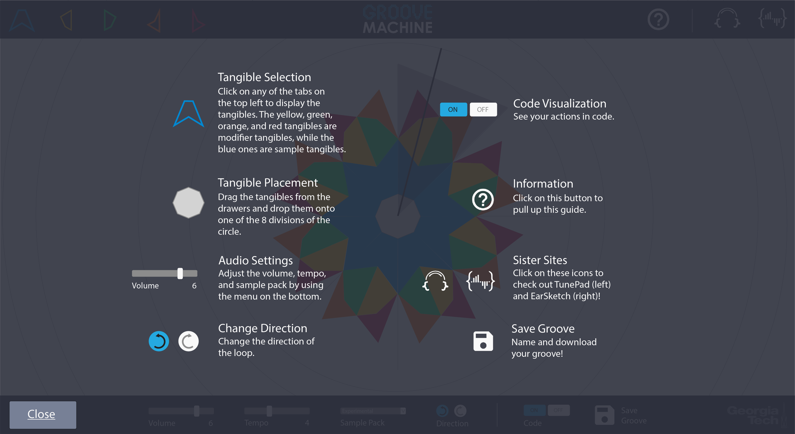

GrooveMachine is a tangible interface that uses music as a metaphor to teach kids about coding. It's a table where people can place tangible pieces onto its surface. The center octagonal hub serves as a step sequencer, which causes the tangibles to play a music sample when their section is passed over by light. My task was to bring this project into the digital realm by re-designing its web UI and UX.

Everyone agreed that GrooveMachine's website needed a facelift. However, the developers didn't want the overall functionality of the site to change. So I set out to make changes to the look of the website first before I made any suggestions on its interactions.
My first move was to experiment with different layouts. I made three different wireframes that kept the tangible drawers, volume and tempo settings, and "Save" button. One functionality I did add was the "Help" button, which I thought was crucial for new users since this app had somewhat of a learning curve.

We went with the layout with the navigation bar at the top of the webpage since it offered the most real estate for the sequencer in the center. I also made several mood boards to get a good feel for the tone of GrooveMachine.


I also made menus and settings appear off to the side so that users can still see main action of the app.

One major part of the GrooveMachine web app was the audio visualization, one of the factors that distinguishes it from the physical version. The audio vis allows users to "see" the sounds that they're making so they can make a mental connection between the two.


Another important component of GrooveMachine was the code visualization. This was a way for the user to see their actions translated into code. It was updated every time a change was made to the configuration of the table. The web version needed to have something like that too.


For each tangible I designed an unselected, inactive, and active state. The unselected state indicates that the tangibles were still in the drawers, not yet moved. The inactive state indicates that the tangible has been manipulated and placed onto the table, but not yet passed over by the step sequencer. The active state indicates that the tangible has been manipulated and that it is currently being "activated" by the step sequencer and producing a sound.

The blue tangibles have circular markings on them to indicate that they are "connector" tangibles. In other words, the blue tangibles produce the main sounds. The red, orange, green, and yellow tangibles are "modifier" tangibles. They're meant to attach to the connector tangibles and modify the main sound, like audio effects.
I started to experiment with brighter color palettes because the UI was a bit too dark.


A bottom menu was added because of important additional functionalities that weren't present in the previous version of the web app. The "Direction" and "Sample Pack" settings were added since they were a crucial part of the table. "Direction" changes the direction of the step sequencer, while "Sample Pack" changes the genre of sounds that are played (i.e. Mariachi, Acoustic, Hip Hop, etc.).

The last major part I designed was the onboarding screen. This part was tricky because I wanted to give the user enough information but not to overwhelm them. I decided to do a semi-transparent screen overlay with simple instructions regarding each button.
I also made a loading screen for the app.

And I designed some large scale informational posters to go along with a museum exhibition of the physical version of GrooveMachine and a style guide for future reference.
I want to conduct some user studies on the web app to see what users of our target demographic think and feel when using it. I'd also like to do a comparative analysis of existing projects like GrooveMachine to further iterate and inspire my design desicions.